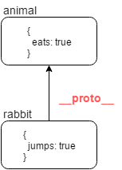
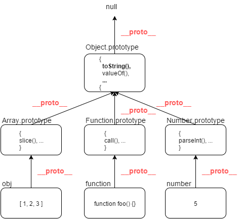

The main point is that one object can be prototype of another object. That means if property isn’t found in the object - than it takes from prototype object. In JavaScript this implementation is at the language level.
Inheritance through link __proto__
Inheritance in JavaScript is realized via special property __proto__ (In specs EcmaScript the name is [[Prototype]]). In ES5 the property was available in Chrome / Firefox and Safari, but in other browser was hidden. ES6 includes __proto__ property as standard. In this article, for more efficient way I’ll use __proto__ property, but for legacy you should use Object.getPrototypeOf()
If the object, for instance rabbit, has a special link __proto__ to another object animal, that mean, that all property which are searched in the rabbit, will be also searched in the animal object.
var animal = { eats: true },
rabbit = { jumps: true };
rabbit.__proto__ = animal;
console.log(rabbit.eats) //true
We can write any object in prototype object:
var rabbit = {foo: 'bar'};
rabbit.__proto__ = window;
console.log(rabbit.location) // call location object through window object
So, object pointed by __proto__ it is his prototype. In another words prototype it’s “Backup Storage of Properties and Methods”, which automatically used in the search.

Method hasOwnProperty
Simple loop for...in or loop through iterable objects (Array, Mas, Set, arguments object) can’t distinguish between the own properties and properties of his prototype
var animal = {
eats: true
};
var rabbit = {
jumps: true,
__proto__: animal
};
for (var key in rabbit) {
alert( key + " = " + rabbit[key] ); // "eats"; "jumps"
}
For iterate only through own properties with obj.hasOwnProperty(prop):
Prototype Chain
In object __proto__ can be another __proto__ object and so on. For example, the inheritance chain of three object donkey -> winnie -> owl:
Methods to work with __proto__
By historical reason we have methods to get/set __proto__ property:
Object.create(proto, descriptors) creates new bempty object with __proto__ object:
This method only allows create new empty object. He can’t change prototype of an existing object.
Create an empty collection, without prototype chain with Object.create(null):
Exercise with __proto__
1.1
1.2

F.prototype
Property prototype can point on any object but it has sense, when it’s assigned to function-constructor.
When project is creating via new, in his __proto__ object writes link from prototype of function-constructor.
Exercises with prototype and new
1.1
1.2
1.3
1.4
1.5
2.1
“Classes”. Where methods come from empty {}
Lets begin with creating empty object end call method toString:
It’s obviously, that { } is empty. But then who generates method toString()? Off-course this makes method toString() which is built-in Object.prototype.
In details it works like this:
- Creating object literal
obj = { }means shorthand form forobj = new Object(), wereObjectis built-in function-constructor for objects - While
new Objectinvokes, new object has receivesobj.__proto__ = Object.prototype. obj.toString === Object.prototype.toStringmethod will be taken from prototype object.
Build-in “Classes”
The same methods use in arrays Array, functions Function and other objects. Build-in methods are in Array.prototype, Function.prototype, etc.

Thats why everywhere JS developers like to say that “All objects inherit from Object”. But it’s a quite incorrect. All objects inherit from Object.prototype via __proto__ link.
In some cases, method can overrides. For example, “class” Array has it’s own toString, which is in Array.prototype.toString:
Exercises with overriding prototype
1.1
1.2
1.3
1.4
Declares own “Classes”
For create “Class” you need:
- Declare function-constructor
- Write all required methods and properties in
prototype
Property constructor
Property constructor is in every function, even if it isn’t declare. So concept is next, the property constructor should have link to function, which creates the object:
But when you overriding the prototype, property constructor disappears:
So how it works: animal -> Animal.prototype (new Object) -> Object.prototype
Prototype OOP
Classes it isn’t only function-constructor with prototype, it’s also additional opportunities for OOP development.
For example two “Classes” and realization of “Class inheritance”:
SaveMyDay: